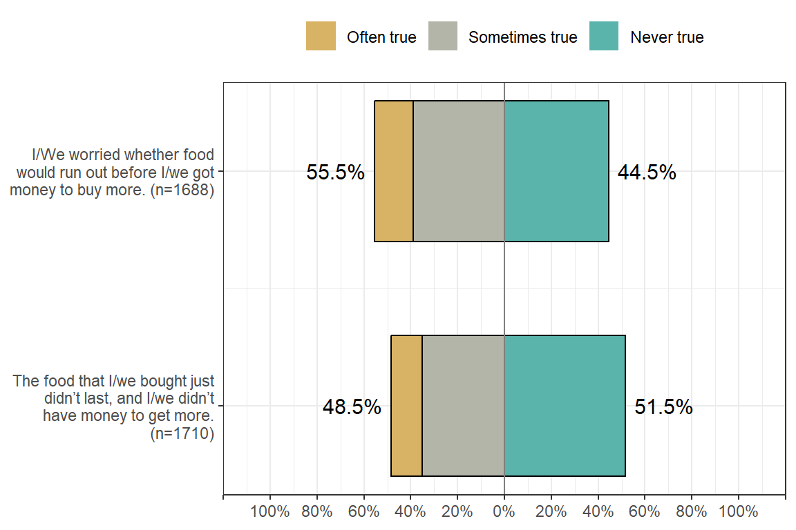
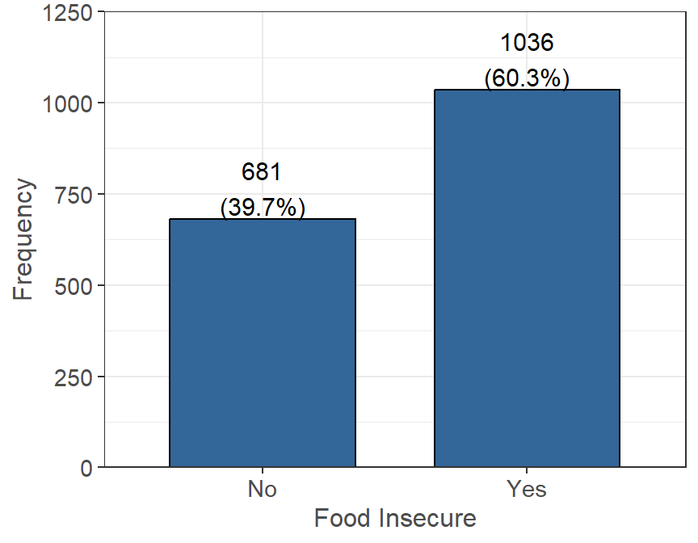

Food Security
The following questions were asked in regard to students’ feelings towards food security due to a lack of or no money. Students were asked in they had to cut or skip meals (and how often), went entire days without eating, and other situations due to a lack of money.1 Students were also asked how they handled situations when they had run out of money for food, and if they had gotten any assistance.
Food Eaten in Household
For the following statements, please state whether they were often true, sometimes true, or never true for you/your household in the last 30 days.
Household is determined by the number of people you purchase and prepare food with. This may or may not include your roommates.
Food Insecurity
The following was determined using the two item food insecurity screening questions. If a student answered “sometimes true” or “often true” to either question, they were considered to be food insecure (n=1717, 81% of 2110 reporting):
- “I/We worried whether food would run out before I/we got money to buy more.”
- “The food that I/we bought just didn’t last, and I/we didn’t have money to get more.”

The majority of the students that took part in the survey are considered to be food insecure (1036 people). There are 681 students not considered to be food insecure, meaning they answered “never true” to the above question criteria.
Ran Out of Money
In the last 30 days, if you ran out of money for food, what did you do? (choose all that apply):
| Measure | Yes (%) |
|---|---|
| I did not run out of money for food (n = 1806) | 856 (47.4%) |
| I started skipping meals. (n = 1806) | 418 (23.1%) |
| I used my credit card (not debit card) to buy food. (n = 1806) | 375 (20.8%) |
| My friends, family or roommates gave me money for groceries. (n = 1806) | 307 (17.0%) |
| My friends, family or roommates fed me or took me out to eat. (n = 1806) | 252 (14.0%) |
| I went to the food pantry or other free food organizations. (n = 1806) | 217 (12.0%) |
| I can get free food/meals from my work. (n = 1806) | 103 (5.7%) |
| Other (n = 1806) | 39 (2.2%) |
Footnotes
These questions were developed by the USDA’s screener for food insecurity status↩︎